Setup guide
RG Devs Point of Sale — install, activate and start selling
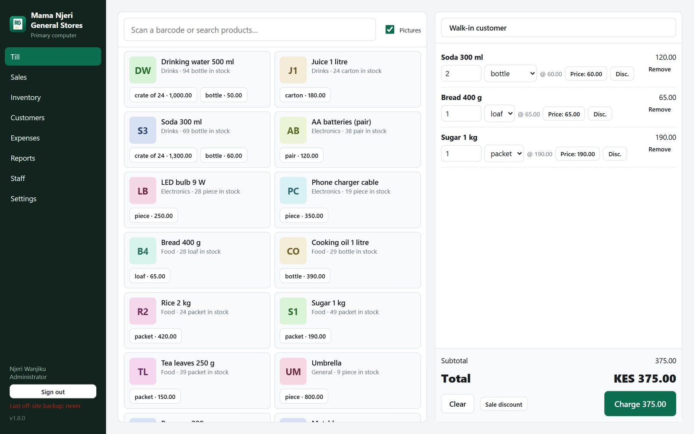
Contents
- What you need
- Install on the main computer
- Activate: free trial, buy with M-Pesa, or a licence key
- First-run setup
- Products and stock
- Staff, managers and approvals
- Making a sale and printing receipts
- Your receipt: logo, M-Pesa line and printer
- Barcode scanner and shelf labels
- M-Pesa at the till
- Connecting other computers (stations)
- Backups — please don't skip
- Reports and the PDF business report
- Your licence and updates
- Troubleshooting and support
How it works in one sentence: one computer in the shop — the main computer — holds all the data and runs the
system; any other computer on the same Wi-Fi or cable network can sell, using Chrome or Edge, without installing anything.
1. What you need
| Item | Details |
|---|
| Main computer | Windows 10 or 11, 64-bit, 4 GB RAM or more. It should be switched on during business hours — the other computers depend on it. |
| Internet | Once, to activate (a phone hotspot is fine). Afterwards only for buying more licence time, M-Pesa prompts, off-site backups and updates. |
| Other computers (optional) | Any Windows computer with Chrome or Edge on the same network. |
| Receipt printer (optional) | A 58 mm or 80 mm thermal printer installed in Windows, or any A4 printer for invoices. |
| Barcode scanner (optional) | Any USB scanner that types like a keyboard. |
| For backups | A Google account with Google Drive for desktop, OneDrive, or a USB drive you take home. |
2. Install on the main computer
- Download the installer from the RG Devs Point of Sale website (Download for Windows), or copy it from a flash drive.
- Double-click RG Dev POS Setup.exe. If Windows shows “Windows protected your PC”, click More info, then Run anyway.
- Choose Yes when Windows asks for permission. This lets the installer set up the network rule that other computers need.
- When it finishes, RG Devs Point of Sale opens by itself. From now on it starts with Windows and sits by the clock (system tray).
Closing the window does not close the program — it keeps running by the clock so other computers stay connected. To quit
completely, right-click its icon by the clock and choose Quit.
3. Activate
The first screen asks how you want to licence this computer. The computer must be online for this step.
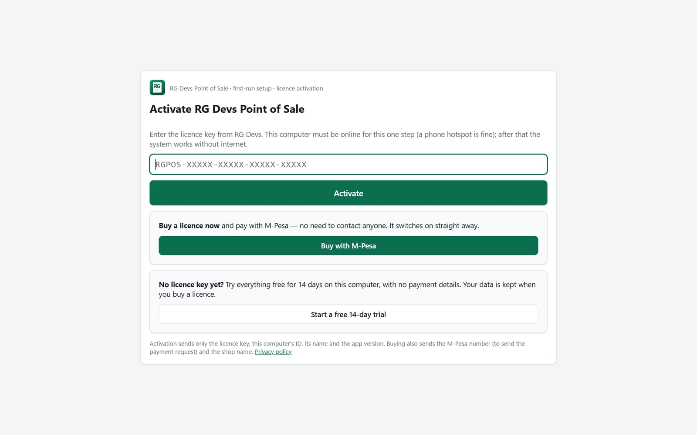
The activation screen: enter a key, buy with M-Pesa, or start a free trial.
- Start a free 14-day trial — everything works, no payment details. One trial per computer.
- Buy with M-Pesa — choose a plan, type the M-Pesa number and press Pay. Enter your M-Pesa PIN on the phone; the licence
switches on by itself within a minute.
- Licence key — if you bought from RG Devs directly, type the key (RGPOS-XXXXX-…) and press Activate.
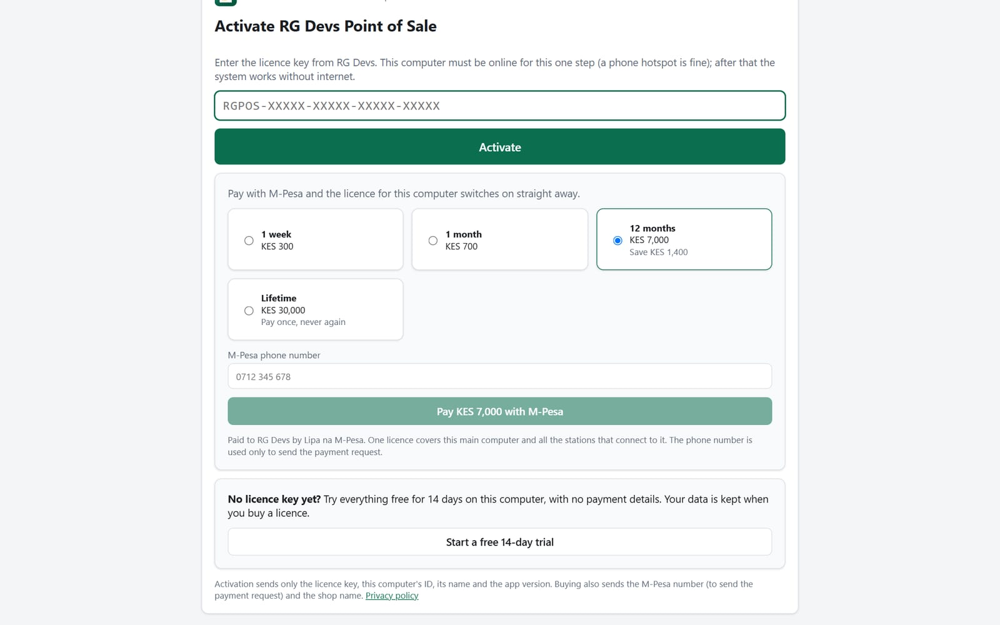
Buying in the app: 1 week KES 300 · 1 month KES 700 · 12 months KES 7,000 · Lifetime KES 30,000.
4. First-run setup
- Type of business — General retail (shops, hardware) or Healthcare (chemists, clinics), then the description that fits best. This
decides the add-ons and roles you get, and how many computers the shop needs.
- Business details — name, phone, address and KRA PIN print on receipts. Say whether you charge VAT (you can change this later in
Settings → Tax).
- Owner account — your name, a username and a password of at least 8 characters.
- Recovery key — write it on paper and keep it away from the computer. It is the only way to reset the owner password at this
computer if it is forgotten.
If setup says Windows treats the network as Public, open Windows Settings → Network & internet → Wi-Fi (or
Ethernet) → your network → Network profile type and choose Private. Otherwise other computers cannot connect.
5. Products and stock
Try it with sample products
Settings → About → Add sample products adds 20 everyday items with prices and stock, so you can practise a sale straight away. You can
edit or deactivate them later.
Add your own
- Inventory → New product. Start with the smallest unit you sell (piece, tablet, kg), then add bigger packs and how many small units
they hold — for example, a crate holds 24 bottles.
- Set a price for each unit you sell. Untick Sold at the till for packs you only buy in.
- Scan the barcode into the product if it has one.
- Receive opening stock: open the product in Inventory and press Receive delivery, entering the cost, so profit reports are right.
Many products? Inventory → Import from spreadsheet accepts an Excel or CSV sheet; download the template, fill it in and preview before saving.
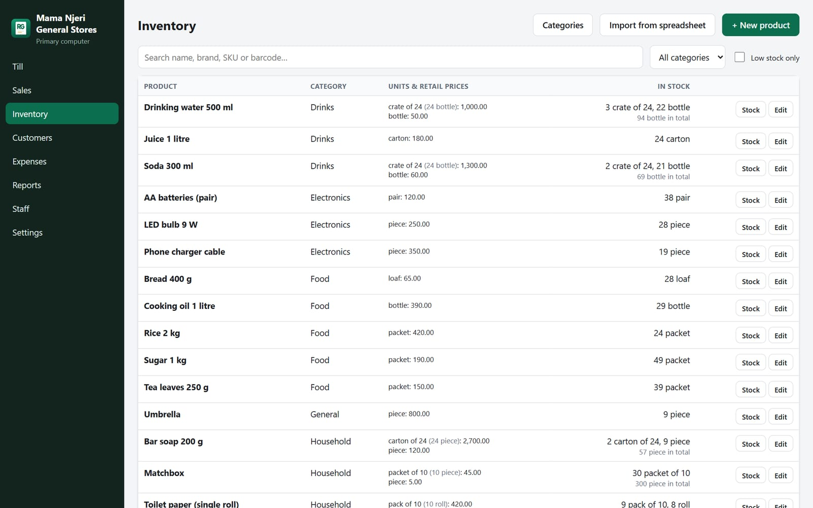
Inventory: products, stock levels and prices.
6. Staff, managers and approvals
- Staff → New staff account for each person; choose Cashier or Manager. They set their own password on first sign-in.
- Give managers a quick PIN (Settings → My account). When a cashier needs a void, refund or a big discount, the manager picks
their name on the cashier's screen and types the PIN — the cashier stays signed in, and both names are recorded.
- Every void, refund, discount and price change is in the audit log and the Controls report.
7. Making a sale and printing receipts
- Open Till. Scan a barcode, search, or tap a product's price button (e.g. bottle · 60.00).
- Change the quantity or unit in the sale list if needed. Choose a customer for credit or special prices (optional).
- Press Charge, choose Cash, M-Pesa or Card, enter the amount received and press Complete sale.
- Print the receipt. The first time, choose your thermal printer in the Windows print window and tick that it should be remembered.
The till: products on the left, the current sale and total on the right.
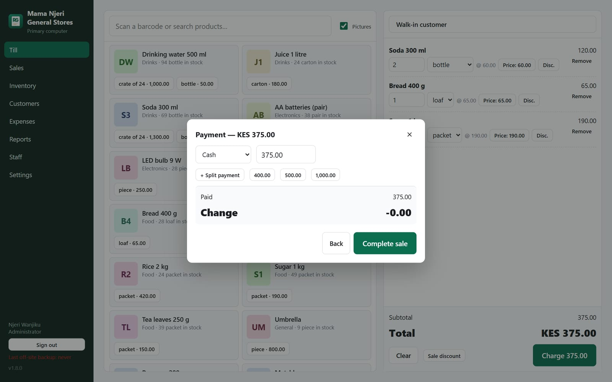
Payment: split payments are allowed; change is calculated for you.
Paper width (58 or 80 mm) and what appears on the receipt are set in Settings → Receipt (next chapter). No printer?
Choose Microsoft Print to PDF to save the receipt. If a receipt does not print, the sale is still saved: the till shows a plain
receipt you can print again or copy.
8. Your receipt: logo, M-Pesa line and printer
Open Settings → Receipt and tick Custom receipt layout. The preview on the right shows exactly what will print.
- Logo: upload your logo (a black-and-white logo prints best). It is turned into sharp printer dots automatically.
- Header and footer lines: e.g. opening hours, "Karibu tena!", your return policy.
- Pay with M-Pesa line: choose Buy Goods Till or Paybill and enter the number.
- Show: tick what you want — cashier, customer, item codes, discounts, M-Pesa code, a QR code.
- Press Save, then Test print on every computer.
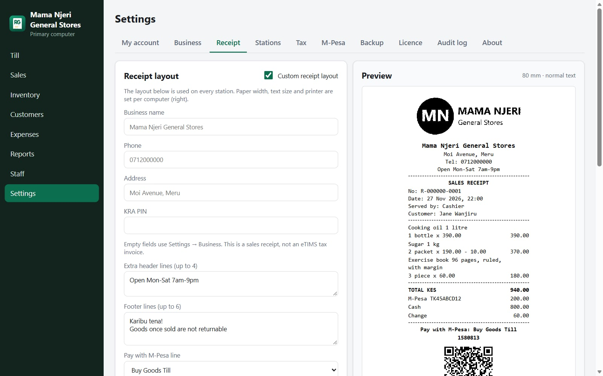
The receipt designer with its live preview.
This computer's printer
Each computer keeps its own paper width (58 or 80 mm) and text size. On the main computer you can also choose the
printer: receipts then print straight away without the print window. Other computers choose their printer once in the print window.
Receipts printed again are marked COPY with the time. Reset to Classic brings back the original receipt.
9. Barcode scanner and shelf labels
Tick Settings → Business → Barcodes & shelf labels (already on for new shops). Plug in a USB barcode scanner — test it in
Notepad first: each scan should type the number and start a new line.
- Scan anywhere on the till. The cursor does not need to be in the search box.
- Unknown barcode: the till beeps and shows Barcode not found. A manager finds the product, picks the pack the barcode is on
(single, packet, carton…) and presses Add barcode and sell. A cashier calls the manager to type their PIN.
- Scanned wrongly? A misread barcode beeps and asks you to scan again instead of selling the wrong thing.
- Several barcodes: in the product, each pack can have more barcodes (Another barcode → Add). A carton's barcode sells a
carton; a single's sells one.
- No barcode? Generate in-store barcode gives the product a number starting with 200 for its shelf label.
Shelf labels
Inventory → Shelf labels: tick products (or a category), choose the label size — A4 sheet of 24 or 40, or a label-printer roll of
50 × 30 or 40 × 25 mm — and press Print. After printing, answer Yes, record them. When prices change, choose
Prices changed since last print to reprint only the labels that are now wrong. For A4 sheets set the print window's scale to
100 % (Actual size).
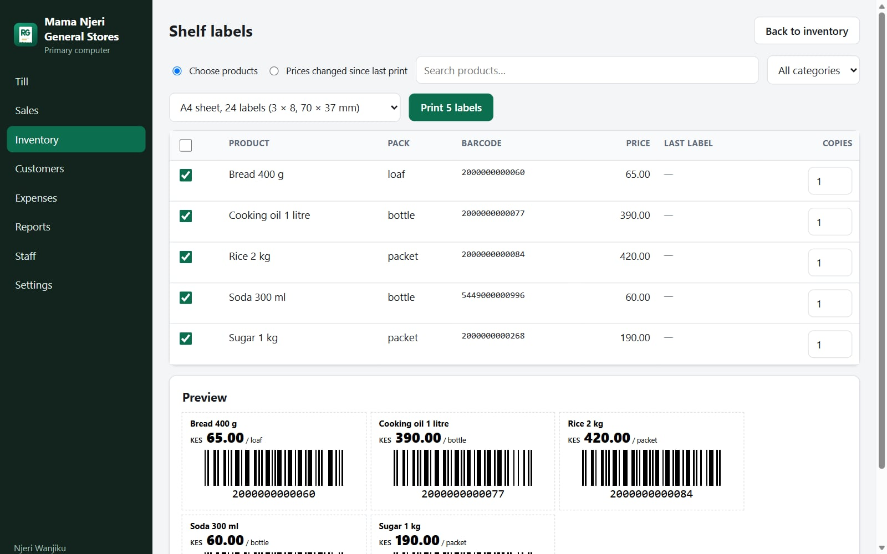
Shelf labels with a preview of name, price, pack and barcode.
10. M-Pesa at the till
Without any setup, choose M-Pesa as the payment and type the code from the customer's M-Pesa message.
To send the payment prompt straight to the customer's phone, connect your own Safaricom Daraja account in Settings → M-Pesa:
Consumer Key, Consumer Secret, Passkey, and your Paybill or Till (with store number). Press Test connection. A payment then counts only
after Safaricom confirms it.
Your Daraja keys are stored encrypted on the main computer only — never on station computers, and never sent to RG Devs.
11. Connecting other computers (stations)
- Connect the other computer to the same Wi-Fi or network as the main computer.
- On the main computer open Settings → Stations. It shows the setup address, for example http://rgpos.local:4781.
- On the other computer, open that address in Chrome or Edge, download and run the small station setup. When Windows asks to install
the shop's certificate, check the thumbprint matches the one on the main computer, then choose Yes.
- Open the POS link, type a name for the station (e.g. Counter 2) and note the 6-digit code.
- On the main computer, type the code under Approve a new station and press Approve.
- On the station, use the browser menu → Install app so it opens like a program.
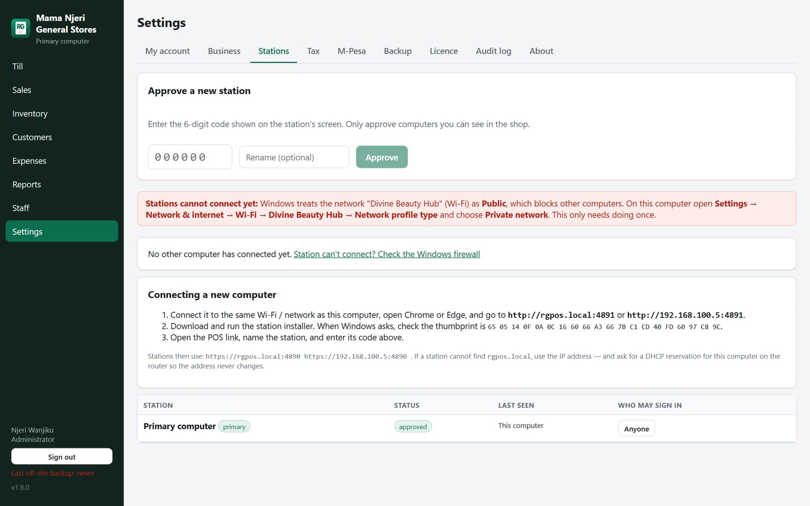
Settings → Stations: approve new computers and choose who may sign in at each.
Station can't connect? Make sure the network is Private (section 4) and, if Windows asked about the firewall on the main
computer, that Private networks was allowed. Ask for a fixed (reserved) address for the main computer on your router so it never changes.
12. Backups — please don't skip
The system copies your data every hour (when something changed), every day, week and month, on the main computer. To survive a dead or
stolen computer you also need an off-site copy:
- Settings → Backup → Set backup password. Write it down and keep it away from the shop. Without it no one — not even RG Devs — can
open your backups.
- Install Google Drive for desktop (or OneDrive) and sign in with the owner's account. In Off-site backup, choose the Drive folder
(for example G:\My Drive), keep the time at 21:00, and press Save. The first copy is made and checked at once.
- Press Back up now and check every location says ok.
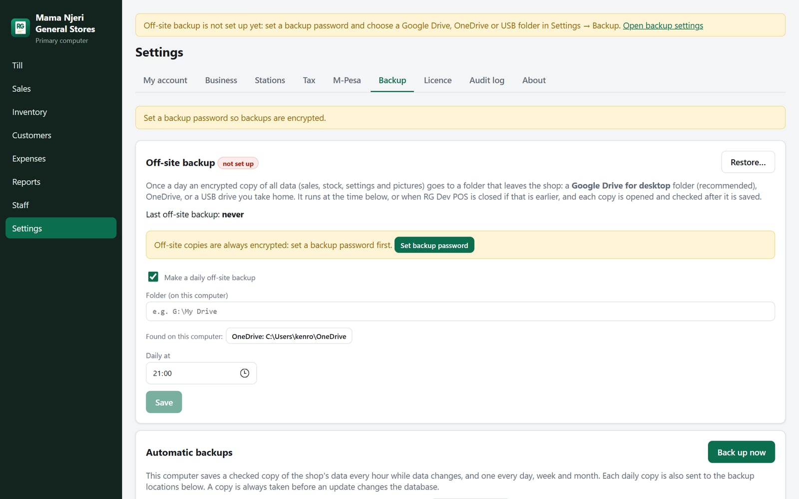
Settings → Backup: local copies, off-site copy and restore.
To move to a new computer: install the app, then use Settings → Backup → Restore and choose the off-site file. Ask RG Devs to move
your licence to the new computer.
13. Reports and the PDF business report
Reports shows sales, transactions, profit estimate, payments by method (cash should match the drawer), sales by staff member and top
items, for any date range. Controls report lists voids, refunds, discounts, price changes, reprints and removed lines.
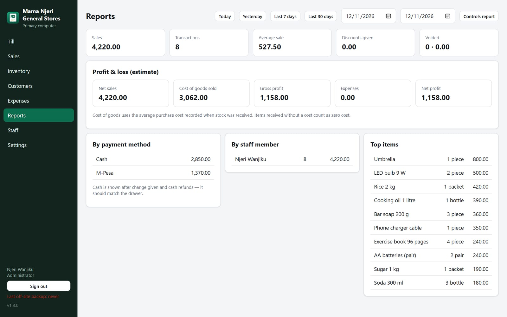
Reports for the day.
PDF business report
Choose the dates and press Export PDF. You get an A4 report with your shop's name, details and logo: sales, profit and loss,
payment methods, staff, top items and a daily chart, with prepared-by and signature lines. On the main computer it is saved straight to a
PDF file (Documents by default); on other computers choose Save as PDF in the print window.
14. Your licence and updates
- Settings → Licence shows your plan and end date. Buy more time with M-Pesa at any time — it is added to what is left.
- A week before a bought licence ends, the owner sees a reminder. When it ends, selling pauses (your data is kept) until more time is bought.
- Updates download by themselves. When one is ready you will be asked — choose Install now when the shop is quiet, then Yes in
the Windows prompt. Other computers reconnect and show please reload.
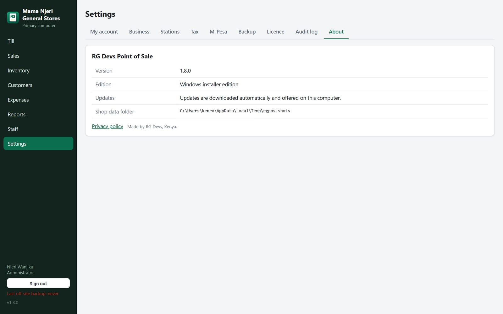
Settings → About: version, edition, privacy policy and sample products.
15. Troubleshooting and support
| Problem | What to do |
|---|
| “Already running” when opening the app | It is already open by the clock. Click its icon there. If another edition is running, quit it first. |
| Stations can't connect | Main computer on? Network set to Private? Firewall allowed for private networks? Try the IP address shown in Settings → Stations. |
| Licence says “checking” after a restart | Windows is still starting; wait a minute. Selling continues. |
| M-Pesa prompt not received | Check the number and that the phone is on. Wait for the screen to finish, then try again or type the M-Pesa code. |
| Forgot the owner password | On the main computer, use Forgot password with your recovery key. |
| Receipt prints too wide or small | Set the paper width in Settings → Receipt → This computer's printer and the printer's paper size in Windows. |
| Scanner types the number but nothing is added | Check Settings → Business → Barcodes & shelf labels is ticked and the scanner sends Enter after each scan (see its manual). |
| Shelf labels don't line up with the sheet | In the print window set scale to 100 % / Actual size and margins to None. |
Getting help
Email rgdev.ke@gmail.com with your business name and the last five characters of your licence key (shown in Settings → Licence).
If asked, send the log files from the tray icon → Open data folder → logs.
Privacy policy and terms: see the RG Devs Point of Sale website.